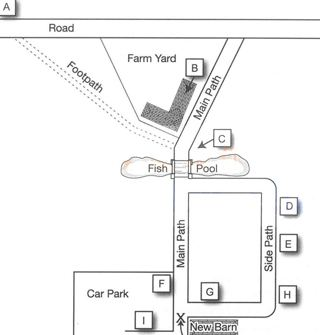
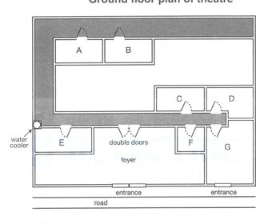
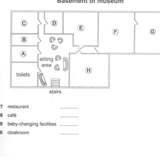

Listening visuals Cambridge 11Reviewed results: 122 confirmed issue records (86 duplicate pairs, 9 sequence inversions, 1 wrong-Part image, 26 clipped images); 23 suspected records. Counts overlap Parts/assets. Full reviewed CSV. Raw audit.json/findings.csv are detector output, not the final defect list. Fallback scope alone is not a defect. OCR ranges are incomplete hints.
All books · Cambridge 11: 16 Parts · exact current resolver outputCambridge 11 / Test 1 / Part 1
No confirmed/candidate defect detected; not a visual PASS
Q[1, 10]: 1, 2 [Part fallback]
 #1 OCR Q[[1, 10]] · 1240×1754
#1 OCR Q[[1, 10]] · 1240×1754
Test_1_Section_1_PDF_008.jpg
assets/public/f77737f3d5bf21e130100940c15812728aeb2cb454d80ca96efc2328e377ec7d.jpg
asset-f77737f3d5bf21e130100940c15812728aeb2cb454d80ca96efc2328e377ec7d #2 OCR Q[] · 1240×1754
#2 OCR Q[] · 1240×1754
Test_1_Section_1_PDF_009.jpg
assets/public/0db14d67f8b584326a528e19ff3d166ea6cc7b08b5b070a15580ebfe5ead48a8.jpg
asset-0db14d67f8b584326a528e19ff3d166ea6cc7b08b5b070a15580ebfe5ead48a8Cambridge 11 / Test 1 / Part 2
V0220:confirmed:duplicate_content; C044:suspected:crop_edge_risk
Q[11, 14]: 1, 2, 3 [Part fallback]
Q[15, 20]: 1, 2, 3

#1 OCR Q[] · 850×890
Test_1_Section_2_Fiddy_Farm_Map.jpg
assets/public/7692e21a714575a7064a42db592ee6db8ce76c15eb5d6adb28b03b2631f7871d.jpg
asset-7692e21a714575a7064a42db592ee6db8ce76c15eb5d6adb28b03b2631f7871d #2 OCR Q[[11, 20], [11, 14]] · 1240×1754
#2 OCR Q[[11, 20], [11, 14]] · 1240×1754
Test_1_Section_2_PDF_010.jpg
assets/public/17940cca1a5ab2ae9c10153025ef730436ff498ad216cc579d73a822880cf1b1.jpg
asset-17940cca1a5ab2ae9c10153025ef730436ff498ad216cc579d73a822880cf1b1 #3 OCR Q[[15, 20], [15, 20]] · 1240×1754
#3 OCR Q[[15, 20], [15, 20]] · 1240×1754
Test_1_Section_2_PDF_011.jpg
assets/public/9d9e46ef41ebaa602b8b32e54a65a4a2e07ed9a7da879c40e6fcdc2aedab888a.jpg
asset-9d9e46ef41ebaa602b8b32e54a65a4a2e07ed9a7da879c40e6fcdc2aedab888aCambridge 11 / Test 1 / Part 3
No confirmed/candidate defect detected; not a visual PASS
Q[21, 30]: 1, 2 [Part fallback]
 #1 OCR Q[[21, 30]] · 1240×1754
#1 OCR Q[[21, 30]] · 1240×1754
Test_1_Section_3_PDF_012.jpg
assets/public/f3b0211886811fd84668b4861ed284fbe79f4e4a71fce468ce2478642ce88c4e.jpg
asset-f3b0211886811fd84668b4861ed284fbe79f4e4a71fce468ce2478642ce88c4e #2 OCR Q[] · 1240×1754
#2 OCR Q[] · 1240×1754
Test_1_Section_3_PDF_013.jpg
assets/public/74fb636e803632a6569009e6b366e83c72979c357943048cddc03d4f18f8540e.jpg
asset-74fb636e803632a6569009e6b366e83c72979c357943048cddc03d4f18f8540eCambridge 11 / Test 1 / Part 4
No confirmed/candidate defect detected; not a visual PASS
Q[31, 40]: 1, 2 [Part fallback]
 #1 OCR Q[[31, 40]] · 1240×1754
#1 OCR Q[[31, 40]] · 1240×1754
Test_1_Section_4_PDF_014.jpg
assets/public/b75e63d14a7c49369985632c4f0afd1235d9938f69b5fec889368db9ceea4107.jpg
asset-b75e63d14a7c49369985632c4f0afd1235d9938f69b5fec889368db9ceea4107 #2 OCR Q[] · 1240×1754
#2 OCR Q[] · 1240×1754
Test_1_Section_4_PDF_015.jpg
assets/public/a94823ab2e589f1df1c940011d68ba454035386abe96572968fffa78479ce8cd.jpg
asset-a94823ab2e589f1df1c940011d68ba454035386abe96572968fffa78479ce8cdCambridge 11 / Test 2 / Part 1
No confirmed/candidate defect detected; not a visual PASS
Q[1, 10]: 1, 2 [Part fallback]
 #1 OCR Q[[1, 10]] · 1240×1754
#1 OCR Q[[1, 10]] · 1240×1754
Test_2_Section_1_PDF_031.jpg
assets/public/6419da3fb0847a5ef98e60e7544b87b8d9f6643c68f3d09b3fc20b56499b88df.jpg
asset-6419da3fb0847a5ef98e60e7544b87b8d9f6643c68f3d09b3fc20b56499b88df #2 OCR Q[] · 1240×1754
#2 OCR Q[] · 1240×1754
Test_2_Section_1_PDF_032.jpg
assets/public/8be27ee493fe35d09e154ba07b8b3fa0476ac48c497c27bcccf2d86ca50619cd.jpg
asset-8be27ee493fe35d09e154ba07b8b3fa0476ac48c497c27bcccf2d86ca50619cdCambridge 11 / Test 2 / Part 2
V0225:confirmed:duplicate_content; C046:confirmed:clipped_source
Q[11, 12]: 1, 2, 3 [Part fallback]
Q[13, 14]: 1, 2, 3 [Part fallback]
Q[15, 16]: 1, 2, 3 [Part fallback]
Q[17, 20]: 1, 2, 3
 #1 OCR Q[[11, 20]] · 1240×1754
#1 OCR Q[[11, 20]] · 1240×1754
Test_2_Section_2_PDF_033.jpg
assets/public/14055639b3575bf8dd0cb05d9097c85fb42c06f086bc11f0b696aa58cff9f111.jpg
asset-14055639b3575bf8dd0cb05d9097c85fb42c06f086bc11f0b696aa58cff9f111 #2 OCR Q[[17, 20], [17, 20]] · 1240×1754
#2 OCR Q[[17, 20], [17, 20]] · 1240×1754
Test_2_Section_2_PDF_034.jpg
assets/public/0fb33145e8919e798ae1dfcd515f726db0309ae3972d95745710878b0cebdc47.jpg
asset-0fb33145e8919e798ae1dfcd515f726db0309ae3972d95745710878b0cebdc47
#3 OCR Q[] · 880×770
Test_2_Section_2_Theatre_Plan.jpg
assets/public/09c3cccc820cfceb09405b25d771d08f72415b3bd8809a630871e0581b96ac82.jpg
asset-09c3cccc820cfceb09405b25d771d08f72415b3bd8809a630871e0581b96ac82Cambridge 11 / Test 2 / Part 3
No confirmed/candidate defect detected; not a visual PASS
Q[21, 26]: 1, 2 [Part fallback]
Q[27, 28]: 1, 2 [Part fallback]
Q[29, 30]: 1, 2 [Part fallback]
 #1 OCR Q[[21, 30], [21, 26]] · 1240×1754
#1 OCR Q[[21, 30], [21, 26]] · 1240×1754
Test_2_Section_3_PDF_035.jpg
assets/public/97dc8338e3407f9d8e4ce7894af82d9d29089265a12c931131049b1093d46c6d.jpg
asset-97dc8338e3407f9d8e4ce7894af82d9d29089265a12c931131049b1093d46c6d #2 OCR Q[] · 1240×1754
#2 OCR Q[] · 1240×1754
Test_2_Section_3_PDF_036.jpg
assets/public/5c320ddcb5e64709dc1780b6d7b6d5b227ac2a218a0588fd31f8fb9dee2eb0aa.jpg
asset-5c320ddcb5e64709dc1780b6d7b6d5b227ac2a218a0588fd31f8fb9dee2eb0aaCambridge 11 / Test 2 / Part 4
No confirmed/candidate defect detected; not a visual PASS
Q[31, 40]: 1, 2 [Part fallback]
 #1 OCR Q[[31, 40]] · 1240×1754
#1 OCR Q[[31, 40]] · 1240×1754
Test_2_Section_4_PDF_037.jpg
assets/public/bc2721ba746f522b8073fea8abda1b9d24e47f97b6ab49e4f4967e1b83d08b8d.jpg
asset-bc2721ba746f522b8073fea8abda1b9d24e47f97b6ab49e4f4967e1b83d08b8d #2 OCR Q[] · 1240×1754
#2 OCR Q[] · 1240×1754
Test_2_Section_4_PDF_038.jpg
assets/public/4d7dfb9d0a5dde86718fdaa84c8f7f18e94999c400aaf61f8550ca7a77dc9c3f.jpg
asset-4d7dfb9d0a5dde86718fdaa84c8f7f18e94999c400aaf61f8550ca7a77dc9c3fCambridge 11 / Test 3 / Part 1
No confirmed/candidate defect detected; not a visual PASS
Q[1, 6]: 1, 2 [Part fallback]
Q[7, 10]: 1, 2 [Part fallback]
 #1 OCR Q[[1, 6], [1, 10]] · 1240×1754
#1 OCR Q[[1, 6], [1, 10]] · 1240×1754
Test_3_Section_1_PDF_055.jpg
assets/public/d9da3c3bd02795d47109a6eb135ed7a974bbd7731e9edfb1f431db1d38997421.jpg
asset-d9da3c3bd02795d47109a6eb135ed7a974bbd7731e9edfb1f431db1d38997421 #2 OCR Q[[7, 10]] · 1240×1754
#2 OCR Q[[7, 10]] · 1240×1754
Test_3_Section_1_PDF_056.jpg
assets/public/f910b9d2bd8ed6ba3ca278de0f70bce88e8910e46b723975b26d3cac16a1caed.jpg
asset-f910b9d2bd8ed6ba3ca278de0f70bce88e8910e46b723975b26d3cac16a1caedCambridge 11 / Test 3 / Part 2
No confirmed/candidate defect detected; not a visual PASS
Q[11, 15]: 1, 2 [Part fallback]
Q[16, 20]: 1, 2 [Part fallback]
 #1 OCR Q[[11, 20], [11, 15]] · 1240×1754
#1 OCR Q[[11, 20], [11, 15]] · 1240×1754
Test_3_Section_2_PDF_057.jpg
assets/public/36c63fab77983baf04a4093dbcbd6ebdb68cdb699eb9d756e1c7029c1f6e17cb.jpg
asset-36c63fab77983baf04a4093dbcbd6ebdb68cdb699eb9d756e1c7029c1f6e17cb #2 OCR Q[[16, 20], [16, 20]] · 1240×1754
#2 OCR Q[[16, 20], [16, 20]] · 1240×1754
Test_3_Section_2_PDF_058.jpg
assets/public/09fccdb23d339cdeb0ac740e79aa710da41fb225ecf7144290d7a05aaa35c2da.jpg
asset-09fccdb23d339cdeb0ac740e79aa710da41fb225ecf7144290d7a05aaa35c2daCambridge 11 / Test 3 / Part 3
V0237:confirmed:duplicate_content; C002:confirmed:clipped_source
Q[21, 26]: 1, 2, 3
Q[27, 30]: 1, 2, 3 [Part fallback]
#1 OCR Q[] · 1095×630
Test_3_Section_3_Drawings_Table.jpg
assets/public/72599a58ccc716931fc93ea6f72889c8b878fab221c39fffe89bfbebfff22f47.jpg
asset-72599a58ccc716931fc93ea6f72889c8b878fab221c39fffe89bfbebfff22f47 #2 OCR Q[[21, 30], [21, 26]] · 1240×1754
#2 OCR Q[[21, 30], [21, 26]] · 1240×1754
Test_3_Section_3_PDF_059.jpg
assets/public/4cf0b32b3eca0553fd6d0b43bd9eb2598fe4b8e4e154a086cc8580cfdd788901.jpg
asset-4cf0b32b3eca0553fd6d0b43bd9eb2598fe4b8e4e154a086cc8580cfdd788901 #3 OCR Q[[27, 30], [27, 30]] · 1240×1754
#3 OCR Q[[27, 30], [27, 30]] · 1240×1754
Test_3_Section_3_PDF_060.jpg
assets/public/db49345a1390c77b0da9f85f44b130df4fcd62a13c4730edf7c14973242e846a.jpg
asset-db49345a1390c77b0da9f85f44b130df4fcd62a13c4730edf7c14973242e846a Cambridge 11 / Test 3 / Part 4
No confirmed/candidate defect detected; not a visual PASS
Q[31, 40]: 1, 2 [Part fallback]
 #1 OCR Q[[31, 40]] · 1240×1754
#1 OCR Q[[31, 40]] · 1240×1754
Test_3_Section_4_PDF_061.jpg
assets/public/e38f587b6caa9022c01511e8668e94d81c7e79cab51a25f91a7025e79c1132f2.jpg
asset-e38f587b6caa9022c01511e8668e94d81c7e79cab51a25f91a7025e79c1132f2 #2 OCR Q[] · 1240×1754
#2 OCR Q[] · 1240×1754
Test_3_Section_4_PDF_062.jpg
assets/public/2d1cd59b2c834f8bf2b33ce4c3b828bdd455bf422d1932983bc434e4e8aff923.jpg
asset-2d1cd59b2c834f8bf2b33ce4c3b828bdd455bf422d1932983bc434e4e8aff923Cambridge 11 / Test 4 / Part 1
V0240:confirmed:duplicate_content
Q[1, 7]: 1, 2, 3
Q[8, 10]: 1, 2, 3 [Part fallback]
#1 OCR Q[] · 1075×770
Test_4_Section_1_Events_Table.jpg
assets/public/c2323c99ad875333be08d7125af6ea113af1bb82f59cc6492e2e910f70df73db.jpg
asset-c2323c99ad875333be08d7125af6ea113af1bb82f59cc6492e2e910f70df73db #2 OCR Q[[1, 7], [1, 10]] · 1240×1754
#2 OCR Q[[1, 7], [1, 10]] · 1240×1754
Test_4_Section_1_PDF_078.jpg
assets/public/05ebd8bf1dcd235a9256bfbe9e4da81d51e8c52b53415631d712467fbec32005.jpg
asset-05ebd8bf1dcd235a9256bfbe9e4da81d51e8c52b53415631d712467fbec32005 #3 OCR Q[[8, 10], [8, 10]] · 1240×1754
#3 OCR Q[[8, 10], [8, 10]] · 1240×1754
Test_4_Section_1_PDF_079.jpg
assets/public/c0d5fd26a3610da5bdf8fe7a48e10ea62a86f4baae916b18a706361477d16614.jpg
asset-c0d5fd26a3610da5bdf8fe7a48e10ea62a86f4baae916b18a706361477d16614 Cambridge 11 / Test 4 / Part 2
V0242:confirmed:duplicate_content; C012:confirmed:clipped_source
Q[11, 16]: 1, 2, 3 [Part fallback]
Q[17, 20]: 1, 2, 3

#1 OCR Q[] · 930×950
Test_4_Section_2_Museum_Basement_Plan.jpg
assets/public/f57229759b6334de8119bf6c088ef2a939b468bba5d754fced1435ecb1811eb4.jpg
asset-f57229759b6334de8119bf6c088ef2a939b468bba5d754fced1435ecb1811eb4 #2 OCR Q[[11, 20], [11, 16], [11, 16]] · 1240×1754
#2 OCR Q[[11, 20], [11, 16], [11, 16]] · 1240×1754
Test_4_Section_2_PDF_080.jpg
assets/public/d194da8a39c35dacc2662754550f726b3cfeb623b7c5ff72813e42205bdb4fcd.jpg
asset-d194da8a39c35dacc2662754550f726b3cfeb623b7c5ff72813e42205bdb4fcd #3 OCR Q[[17, 20], [17, 20]] · 1240×1754
#3 OCR Q[[17, 20], [17, 20]] · 1240×1754
Test_4_Section_2_PDF_081.jpg
assets/public/77de1e8ffb04bd0e4aea475e10f19ac90cd9fa6e40bc7b8972300a42a524e8c2.jpg
asset-77de1e8ffb04bd0e4aea475e10f19ac90cd9fa6e40bc7b8972300a42a524e8c2Cambridge 11 / Test 4 / Part 3
No confirmed/candidate defect detected; not a visual PASS
Q[21, 22]: 1, 2 [Part fallback]
Q[23, 24]: 1, 2 [Part fallback]
Q[25, 26]: 1, 2 [Part fallback]
Q[27, 30]: 1, 2 [Part fallback]
 #1 OCR Q[[21, 30]] · 1240×1754
#1 OCR Q[[21, 30]] · 1240×1754
Test_4_Section_3_PDF_082.jpg
assets/public/2d87db7c3505c752816f784d4de1d0ecb19c6847acb55f22753fb6f6ed903b3a.jpg
asset-2d87db7c3505c752816f784d4de1d0ecb19c6847acb55f22753fb6f6ed903b3a #2 OCR Q[[27, 30]] · 1240×1754
#2 OCR Q[[27, 30]] · 1240×1754
Test_4_Section_3_PDF_083.jpg
assets/public/b498b03cbb4b0ff35a35940108bbfc4c1efee556a40b6c5ee1fee8ada8b05878.jpg
asset-b498b03cbb4b0ff35a35940108bbfc4c1efee556a40b6c5ee1fee8ada8b05878Cambridge 11 / Test 4 / Part 4
No confirmed/candidate defect detected; not a visual PASS
Q[31, 40]: 1 [Part fallback]
 #1 OCR Q[[31, 40]] · 1240×1754
#1 OCR Q[[31, 40]] · 1240×1754
Test_4_Section_4_PDF_084.jpg
assets/public/199d8ebe2065f54752b1681655ce2edc0c4217cf31073521e2f8426854745d96.jpg
asset-199d8ebe2065f54752b1681655ce2edc0c4217cf31073521e2f8426854745d96